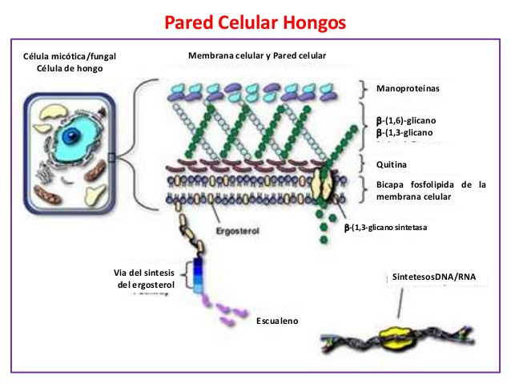
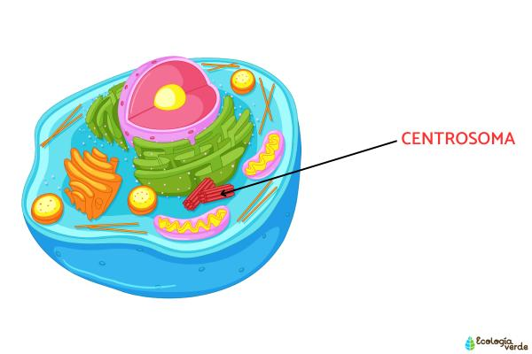

La pared celular de la célula fungi es una estructura rígida que rodea la membrana plasmática y proporciona soporte y protección a la célula. A diferencia de las paredes celulares de las plantas, que están compuestas principalmente de celulosa, la pared celular de los hongos está formada principalmente por quitina, un polisacárido que otorga resistencia y flexibilidad. Esta composición le permite a la célula resistir cambios de presión y protege al hongo de agentes externos, como patógenos y condiciones ambientales adversas.
La pared celular también desempeña un papel importante en la regulación de la interacción de la célula con su entorno, facilitando la absorción de nutrientes y la eliminación de desechos. Además, la pared celular puede variar en grosor y composición según la especie de hongo y su estado de desarrollo. Algunas especies de hongos pueden tener capas adicionales de glucanos y proteínas que contribuyen a sus propiedades estructurales.

Que son los centrosomas?
Los centrosomas en la célula fungi son estructuras celulares que desempeñan un papel crucial en la organización del citoesqueleto y la división celular. A diferencia de las células animales, donde el centrosoma está formado por un par de centriolos, en los hongos, los centrosomas pueden no tener centriolos y están compuestos por una masa de material proteico.
En general, los centrosomas actúan como centros organizadores de microtúbulos, que son componentes del citoesqueleto que proporcionan soporte estructural y son fundamentales para la movilidad celular y la separación de los cromosomas durante la mitosis. Durante la división celular, los centrosomas ayudan a formar el huso mitótico, que es esencial para asegurar que los cromosomas se distribuyan correctamente entre las células hijas.
